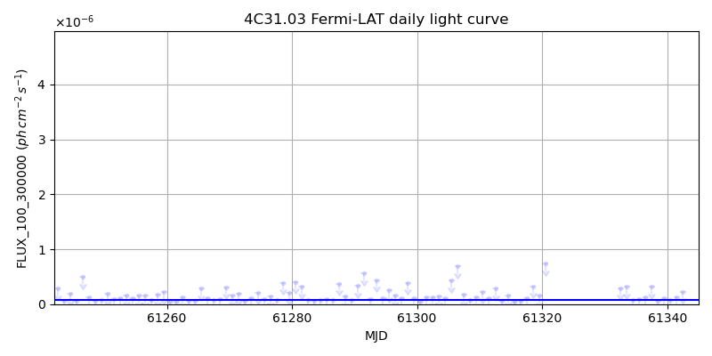
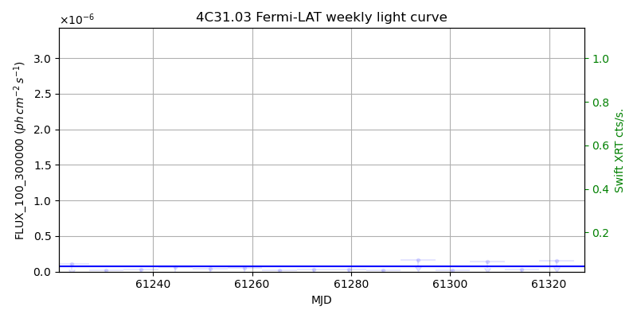
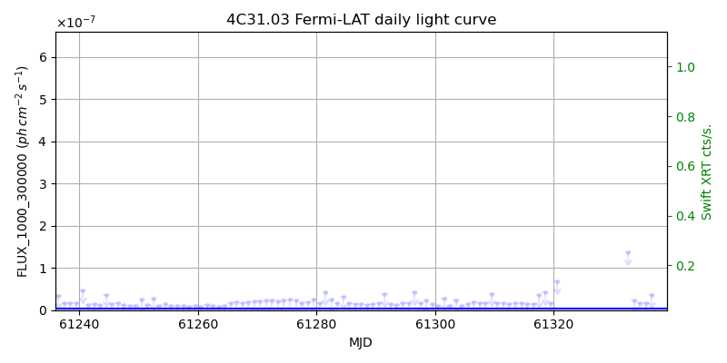
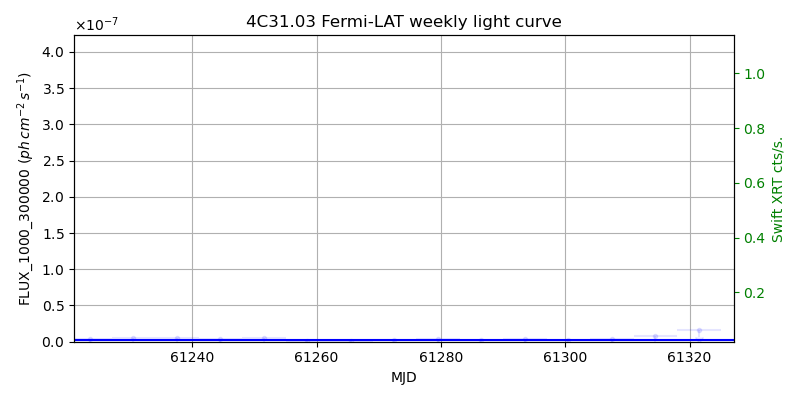

LAT Lightcurve site: https://fermi.gsfc.nasa.gov/ssc/data/access/lat/msl_lc/source/4C_31d03
NED: Query
Time of last update of this page: UT: 2026-10-30 15:11 (MJD: 61343.633)
| Property | Value |
|---|---|
| R.A. | 1:12:50.40 |
| Dec. | 32:08:16.8 |
| z | 0.603 |
| 3FGL SpectrumType | PowerLaw |
| 3FGL PL Index | 2.36 |
| 3FGL Flux_100_300000 | 7.01e-08 1 / (s cm2) |
| 3FGL Flux_1000_300000 | 3.04e-09 1 / (s cm2) |
| 3FGL Flux >200 GeV | 2.22e-12 1 / (s cm2) |
| 3FGL Extrap. Crab >200 GeV | 0.01 |
| 3FGL Flux After EBL Absorption >200GeV | 2.12e-13 1 / (s cm2) |
| 3FGL EBL Crab Fraction >200GeV | 0.00 |

| MJD | dMJD | Flux | dFlux | Frac3FGL | FracCrab>200GeV | EBLFracCrab>200GeV |
|---|---|---|---|---|---|---|
| 61338.50 | 0.50 | 6.66e-08 | 0.00e+00 | 0.00 | 0.00 | 0.00 |
| 61339.50 | 0.50 | 1.07e-07 | 0.00e+00 | 0.00 | 0.00 | 0.00 |
| 61340.50 | 0.50 | 8.14e-08 | 0.00e+00 | 0.00 | 0.00 | 0.00 |
| 61341.50 | 0.50 | 1.18e-07 | 0.00e+00 | 0.00 | 0.00 | 0.00 |
| 61342.50 | 0.50 | 2.28e-07 | 0.00e+00 | 0.00 | 0.00 | 0.00 |

| MJD | dMJD | Flux | dFlux | Frac3FGL | FracCrab>200GeV | EBLFracCrab>200GeV |
|---|---|---|---|---|---|---|
| 61300.50 | 3.50 | 2.10e-08 | 0.00e+00 | 0.00 | 0.00 | 0.00 |
| 61307.50 | 3.50 | 1.38e-07 | 0.00e+00 | 0.00 | 0.00 | 0.00 |
| 61314.50 | 3.50 | 3.00e-08 | 0.00e+00 | 0.00 | 0.00 | 0.00 |
| 61321.50 | 3.50 | 1.49e-07 | 0.00e+00 | 0.00 | 0.00 | 0.00 |
| 61335.50 | 3.50 | 6.02e-08 | 0.00e+00 | 0.00 | 0.00 | 0.00 |

| MJD | dMJD | Flux | dFlux | Frac3FGL | FracCrab>200GeV | EBLFracCrab>200GeV |
|---|---|---|---|---|---|---|
| 61338.50 | 0.50 | 1.86e-08 | 0.00e+00 | 0.00 | 0.00 | 0.00 |
| 61339.50 | 0.50 | 1.39e-08 | 0.00e+00 | 0.00 | 0.00 | 0.00 |
| 61340.50 | 0.50 | 1.53e-08 | 0.00e+00 | 0.00 | 0.00 | 0.00 |
| 61341.50 | 0.50 | 1.79e-08 | 0.00e+00 | 0.00 | 0.00 | 0.00 |
| 61342.50 | 0.50 | 1.66e-08 | 0.00e+00 | 0.00 | 0.00 | 0.00 |

| MJD | dMJD | Flux | dFlux | Frac3FGL | FracCrab>200GeV | EBLFracCrab>200GeV |
|---|---|---|---|---|---|---|
| 61300.50 | 3.50 | 2.41e-09 | 0.00e+00 | 0.00 | 0.00 | 0.00 |
| 61307.50 | 3.50 | 3.53e-09 | 0.00e+00 | 0.00 | 0.00 | 0.00 |
| 61314.50 | 3.50 | 7.47e-09 | 0.00e+00 | 0.00 | 0.00 | 0.00 |
| 61321.50 | 3.50 | 1.67e-08 | 0.00e+00 | 0.00 | 0.00 | 0.00 |
| 61335.50 | 3.50 | 7.46e-09 | 0.00e+00 | 0.00 | 0.00 | 0.00 |
--------------------------------------------------------- Using user-supplied coords: 1:12:50.40 32:08:16.8 2000 --------------------------------------------------------- FLWO UT night of: 2026-10-31 Local Sid. @ Midnight: 02:14 Sunset (-15.0) (local, UT): 18:44 01:44 Sunrise (-15.0) (local, UT): 05:31 12:31 Moonrise (local, UT): 21:49 04:49 Moonset (local, UT): Moon phase: 0.68 --------------------------------------------------------- AzTime LSID UT Obj_el Obj_az Mn_el Mn_az Sep. --------------------------------------------------------- 18:44 20:57 01:44 36.5 71.1 -27.0 28.6 75.0 19:14 21:27 02:14 42.6 73.4 -23.9 34.8 75.4 19:44 21:57 02:44 48.7 75.6 -20.2 40.4 75.7 20:14 22:27 03:14 55.0 77.7 -16.1 45.6 76.0 20:44 22:58 03:44 61.2 79.6 -11.6 50.4 76.4 21:14 23:28 04:14 67.5 81.4 -6.7 54.8 76.7 21:44 23:58 04:44 73.9 82.8 -0.9 58.8 77.0 22:14 00:28 05:14 80.2 83.4 3.8 62.5 77.3 22:44 00:58 05:44 86.6 78.7 9.2 66.0 77.5 23:14 01:28 06:14 86.9 282.4 14.8 69.3 77.8 23:44 01:58 06:44 80.6 276.6 20.6 72.5 78.0 00:14 02:28 07:14 74.3 277.1 26.5 75.5 78.3 00:44 02:58 07:44 67.9 278.5 32.5 78.6 78.5 01:14 03:28 08:14 61.6 280.3 38.5 81.7 78.7 01:44 03:58 08:44 55.3 282.2 44.7 84.9 78.9 02:14 04:28 09:14 49.1 284.3 50.8 88.3 79.2 02:44 04:59 09:44 42.9 286.5 57.0 92.2 79.3 03:14 05:29 10:14 36.8 288.8 63.2 97.0 79.5 03:44 05:59 10:44 30.8 291.3 69.3 103.5 79.7 04:14 06:29 11:14 24.9 293.9 75.2 113.7 79.9 04:44 06:59 11:44 19.2 296.8 80.4 133.8 80.1 05:14 07:29 12:14 13.5 299.8 83.0 177.6 80.3 05:31 07:46 12:31 10.4 301.7 82.2 206.9 80.4 --------------------------------------------------------- Dark hours >55 deg.: 1.57 srcstart (UT): 2026-10-31 03:14 srcend (UT): 2026-10-31 04:48